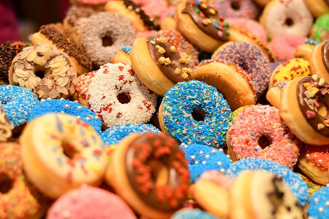

Doughnuts are sweet, fried or baked pastries made from dough, typically shaped as a ring or filled with various creams or jellies.
Here's some information about doughnuts in terms of carbohydrates and how to enjoy them:
1. Carbohydrate content: Doughnuts are primarily made from refined wheat flour, which is a source of carbohydrates. The exact carbohydrate
content can vary depending on the size, type, and preparation of the doughnut. On average, a standard-sized glazed doughnut contains approximately
20-30 grams of carbohydrates.
2. Nutritional profile: Doughnuts are generally considered to be indulgent treats and are high in calories, added sugars, and unhealthy
fats. They tend to be low in fiber, vitamins, and minerals. Due to their high sugar and fat content, they should be consumed in moderation
as part of a balanced diet.
3. Types of doughnuts: There are various types and flavors of doughnuts, including glazed, chocolate frosted, powdered, jelly-filled,
cream-filled, and more. Different bakeries and regions may have their own specialty doughnuts.
4. Eating doughnuts:
- On their own: Doughnuts are typically enjoyed as standalone treats. They can be eaten as a quick snack or dessert.
- Pairing with beverages: Doughnuts can be enjoyed with a cup of coffee, tea, or milk. The combination of the sweet pastry with a hot
beverage is a popular choice.
- Sharing and social occasions: Doughnuts are often shared among friends, family, or coworkers during social gatherings, breakfast
meetings, or special occasions.
- Dessert variations: Doughnuts can be incorporated into desserts by slicing them horizontally and using them as layers in a trifle,
as a base for bread pudding, or crumbled as a topping for ice cream or yogurt.
It's important to note that while doughnuts can be a delightful treat, they are generally high in calories, added sugars, and unhealthy
fats. Regular consumption of doughnuts and other similar sweets can contribute to weight gain and other health issues if not balanced with
a nutritious diet and an active lifestyle. It's advisable to enjoy doughnuts in moderation and prioritize healthier food choices for
overall well-being.